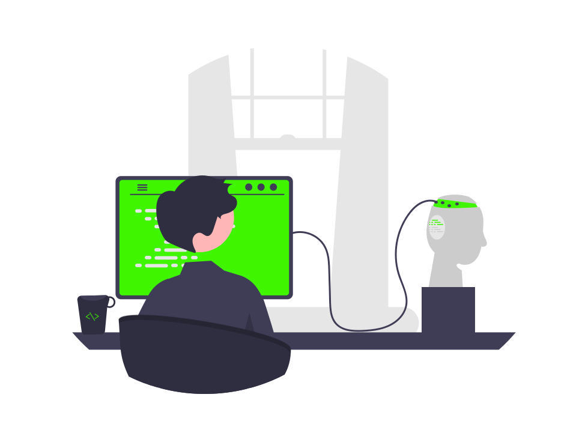
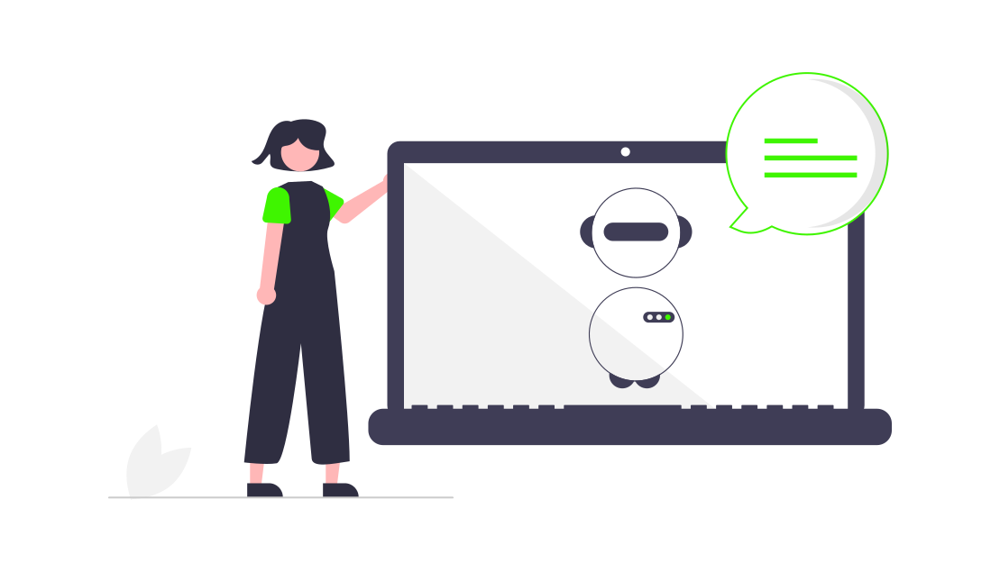
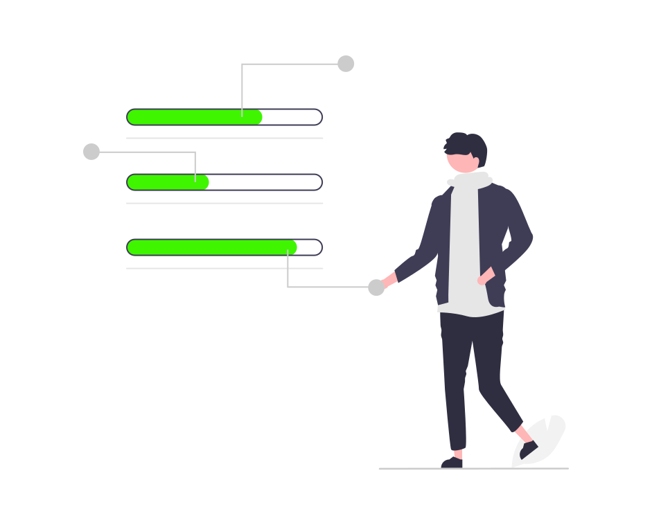
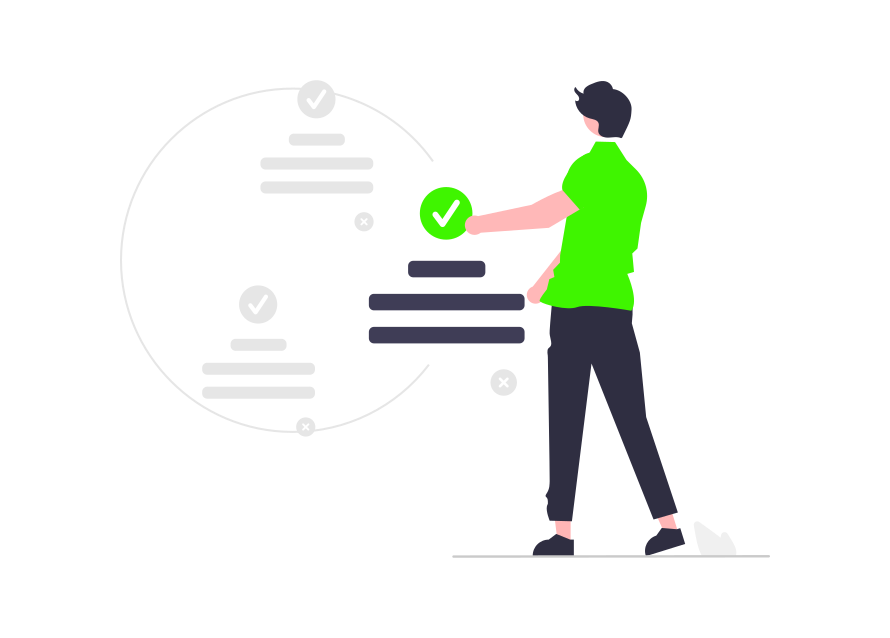
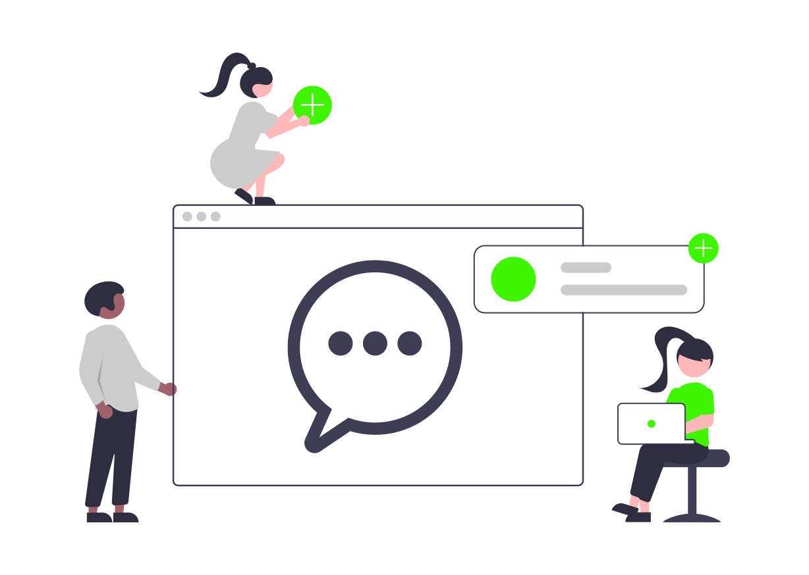
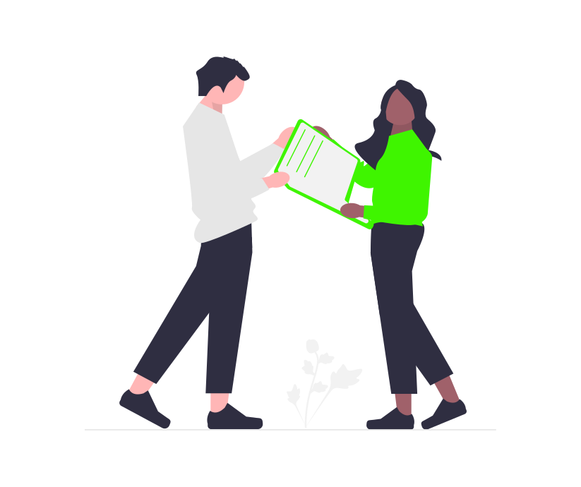
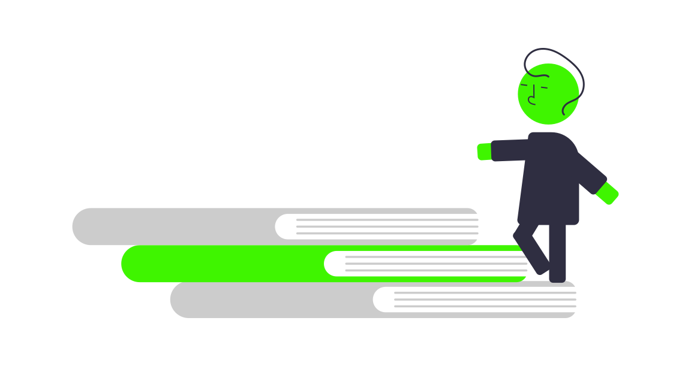
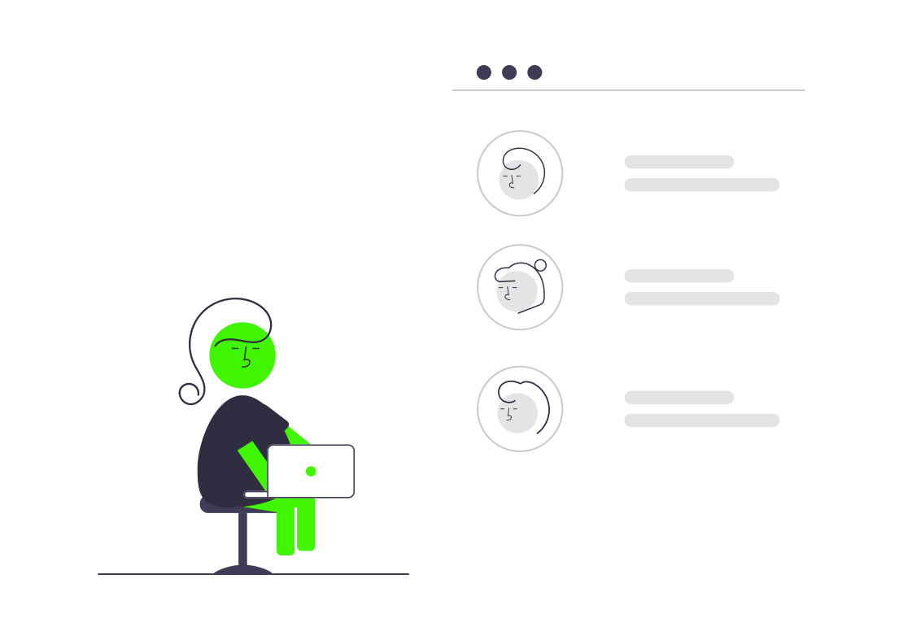

Estado del arte de los chatbots en 2022

El estado del arte se puede interpretar como una forma de tener conocimiento de la posición actual de un tema en particular. Es importante definir cómo es que los chatbots funcionan y cómo se componen en el mercado actual, a continuación podrás encontrar algunas preguntas frecuentes que ayudan a tener un contexto de este tema.
¿Qué es un chatbot?
En niveles básicos de funcionamiento, podemos definir a un chatbot como un programa que pretende simular y procesar conversaciones humanas,permitiendo algún tipo de interacción (escrita o hablada) para poder alimentar este mismo. La finalidad de un chatbot es dar la impresión de estar comunicándose con un humano.


Existen muchos niveles de complejidad en los chatbots, ya que estos pueden ser tan sencillos como aquellos que responden a preguntas en particular, hasta los chatbots que pueden interpretar contexto y mantener conversaciones al hilo con una persona. Sin importar el tipo de chatbot que se pretenda utilizar es importante tener en cuenta siempre algunos conceptos sobre estos, así como tener presente múltiples formas de crearlos.
Tipos de chatbots
Como en cualquier tipo de tecnología, siempre existen diferenciaciones entre un mismo concepto, los chatbots no son la excepción por lo que aquí se encuentran dos de los más populares:
Chatbots orientados a tareas (Declarativos)
Podríamos decir que la gran parte de los chatbots que existen son de este tipo ya que su función principal es la de realizar tareas o generar respuestas automatizadas pero conversacionales, ya que usan un poco de NPL. La mayor parte de este tipo de bots son utilizados para soporte y servicio al cliente.

Chatbots basados en datos y predictivos(conversacionales)
Este otro tipo de bots son algo a lo que denominamos asistentes virtuales, son mucho más avanzados e interactivos con los usuarios. Estos además de estar conscientes del contexto pueden aprender del comportamiento sobre la marcha.
La existencia de estos dos tipos de chatbots no limita a que un proyecto pueda tener un poco de ambos como es el caso de nuestro bot en particular.
¿Cómo funciona un chatbot?
Los chatbots tienen características que los hacen manejar el lenguaje humano de una manera digital siguiendo algunos principios que tiene el lenguaje natural:

Natural Language Processing
Utilizando el procesamiento natural del lenguaje se puede distinguir preguntas de frases, dividiéndolas en oraciones y palabras clave. Este procesamiento permite el manejo de mayúsculas y minúsculas. Tratando de suponer el sentimiento del mensaje.

Natural Language Compression
La comprensión del lenguaje natural le permite a un bot extraer el significado o contexto de lo que el usuario ha comunicado para tratar de comprenderlo o procesarlo.

Natural Language Generation
La generación del lenguaje natural permite que nuestro bot pueda contestar al usuario con frases que no parecen predeterminadas, si no que este es capaz de hacer que las fases se adapten a la conversación.
Características de los chatbots
Si nos enfocamos en cuales son las características que tienen todos los chatbots en el mercado podemos enumerar algunas como las siguientes:
